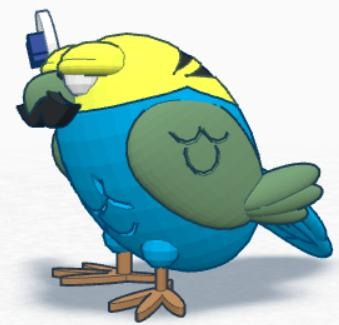

What You Should Know
2D and 3D Shapes
You may have heard the words 2D and 3D. Do you know what they mean?
A square is 2D. It has two dimensions. It has height and width.
A cube is 3D. It has three dimensions. The third dimension is called depth.
What is Tinkercad?
You can use Tinkercad to create 3D models or drawings of objects that have three dimensions.
With Tinkercad you can look at your drawing from the side, top, or bottom. You can also shrink or enlarge the drawing. With practice, you can create a 3D model of almost anything with Tinkercad.

How Does 3D Printing Work?
After you design your object with Tinkercad, you can send your model to the 3D printer. The printer will start with the bottom of the object. It will use hot plastic to build one thin layer at a time, just like a layer cake. Watch the videos to learn more.